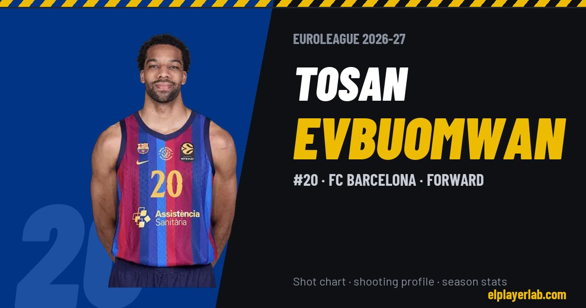

FC Barcelona · Euroleague 2026-27
Tosan Evbuomwan
#20 · Forward · FC Barcelona · 2026-27 · 1 games · 8.0 pts · 3.0 reb · 1.0 ast a game

- Number
- 20
- Position
- Forward
- Height
- 203 cm
- Weight
- 98 kg
- Born
- 2001-02-16
- Country
- United Kingdom
Career
- FC Barcelona 2026-2027
- Greensboro Swarm 2026
- Maine Celtics 2026
- Westchester Knicks (loan) 2025-2026
- New York Knicks (NBA) 2025-2026
- Long Island Nets (loan) 2025
- Brooklyn Nets (NBA) 2024-2025
- San Diego Clippers 2024
- Motor City Cruise (loan) 2024
- Detroit Pistons (NBA) 2023-2024
- Memphis Grizzlies (NBA) 2023-2024
- Motor City Cruise 2023-2024
- Princeton (NCAA) 2019-2023
Euroleague Player Lab: shot charts, shooting profiles and season stats for every player, rebuilt after every game.